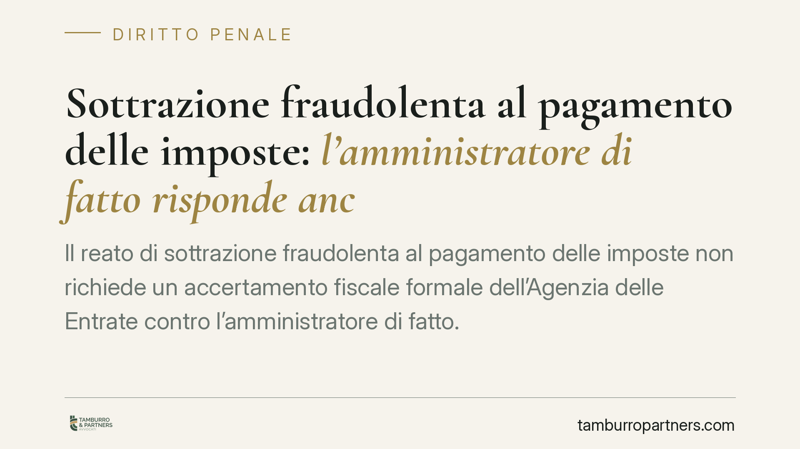

Sottrazione fraudolenta al pagamento delle imposte: l'amministratore di fatto risponde anche senza accertamento fiscale formale
Il reato di sottrazione fraudolenta al pagamento delle imposte non richiede un accertamento fiscale formale dell'Agenzia delle Entrate contro l'amministratore di fatto. Lo chiarisce la Cassazione: il giudice penale valuta in autonomia chi sia il reale titolare del debito tributario, neutralizzando lo schema del prestanome. Un principio che incide su responsabilità penale, sequestri e posizione dei terzi.

Il reato di sottrazione fraudolenta al pagamento delle imposte
Il reato di sottrazione fraudolenta al pagamento delle imposte è previsto dall'art. 11 del D.lgs. 74/2000. Punisce chi, per sottrarsi al pagamento di imposte sui redditi o sul valore aggiunto, o di interessi e sanzioni amministrative relativi a tali imposte, aliena simulatamente o compie atti fraudolenti sui propri beni o su beni altrui, rendendo in tutto o in parte inefficace la procedura di riscossione coattiva.
La norma, nel testo riformato dal D.lgs. 158/2015, distingue due fasce di gravità in base all'ammontare delle imposte, sanzioni e interessi che si intende sottrarre: una soglia inferiore e una superiore ai duecentomila euro, con pena più severa oltre tale importo. Il valore che integra la rilevanza penale va sempre verificato sul testo vigente al momento del fatto contestato.
La questione: serve un accertamento fiscale contro l'amministratore di fatto?
Il punto affrontato dalla giurisprudenza riguarda il caso dell'amministratore di fatto: il soggetto che gestisce concretamente la società, pur non comparendo negli atti formali, dove figura invece un prestanome (il cosiddetto "testa di legno"). È lo schema "apri e chiudi": si costituisce una società, si accumulano debiti verso il Fisco, poi la si svuota o la si lascia morire, lasciando il prestanome a rispondere formalmente mentre il gestore reale resta nell'ombra.
La domanda è se, per contestare all'amministratore di fatto il reato di sottrazione fraudolenta al pagamento delle imposte, serva prima un accertamento fiscale formale dell'Agenzia delle Entrate nei suoi confronti.
La risposta della Cassazione è negativa. Il giudice penale può accertare in via autonoma la titolarità sostanziale del debito tributario in capo a chi ha effettivamente gestito la società, senza attendere un atto impositivo intestato a quel soggetto. Vale qui il principio generale di autonomia del giudizio penale rispetto al procedimento tributario: il giudice ricostruisce i fatti in base alle prove raccolte, non è vincolato alle qualificazioni formali dell'amministrazione finanziaria.
*Riferimento della pronuncia da verificare in redazione (Cass. pen., sez. e numero da indicare).*
Cosa significa in concreto
Il principio chiude una via di fuga. Se l'accertamento penale dipendesse da un atto fiscale formale contro l'amministratore di fatto, lo schema del prestanome diventerebbe uno strumento di impunità: basterebbe non comparire negli atti per restare fuori dal perimetro penale.
Diverse sono le posizioni coinvolte:
- L'amministratore di fatto risponde del reato se emerge, sul piano probatorio, che era lui il reale gestore e il reale titolare dell'interesse a sottrarre i beni alla riscossione.
- Il prestanome non è automaticamente estraneo: la sua posizione va valutata caso per caso, soprattutto sotto il profilo del concorso consapevole.
- Il terzo proprietario del bene sottoposto a sequestro può trovarsi coinvolto quando l'atto fraudolento ha riguardato beni a lui formalmente intestati. In questi casi occorre distinguere tra intestazione reale e intestazione fittizia funzionale alla sottrazione.
FAQ
### L'amministratore di fatto può commettere un reato tributario senza cariche formali?
Sì. Ai fini penali conta la gestione effettiva della società, non l'investitura formale. Chi amministra di fatto può rispondere dei reati tributari, compresa la sottrazione fraudolenta al pagamento delle imposte.
### Il giudice penale deve attendere l'accertamento dell'Agenzia delle Entrate?
No. Il giudice penale accerta in autonomia la titolarità del debito e la condotta fraudolenta, sulla base delle prove acquisite nel processo.
### Il prestanome è sempre esente da responsabilità?
No. La sua posizione va esaminata singolarmente: può rispondere a titolo di concorso se ha prestato consapevolmente il proprio nome alla condotta illecita.
Cosa fare in concreto
- Verificare chi esercita realmente i poteri gestori: la figura dell'amministratore di fatto emerge da fatti, non da nomine formali.
- Conservare documentazione che dimostri la realtà delle operazioni societarie e la tracciabilità dei flussi, soprattutto in presenza di cessioni di beni.
- Prestare attenzione alle intestazioni di beni a terzi: un trasferimento privo di causa concreta può essere letto come atto fraudolento.
- In caso di sequestro, è opportuno valutare tempestivamente la richiesta di riesame, raccogliendo gli elementi utili a dimostrare la liceità e l'effettività dell'operazione contestata.
- Affidarsi a una valutazione tecnica che esamini insieme profilo penale e profilo tributario, data l'autonomia dei due giudizi.
Contributo informativo a cura di Tamburro & Partners Avvocati - Avv. Giuseppe Tamburro. Non costituisce parere legale.
Ogni condominio ha una storia a sé.
Se gestisci un'amministrazione e vuoi un confronto su una specifica questione condominiale, scrivi allo studio. Ti rispondiamo entro un giorno lavorativo.